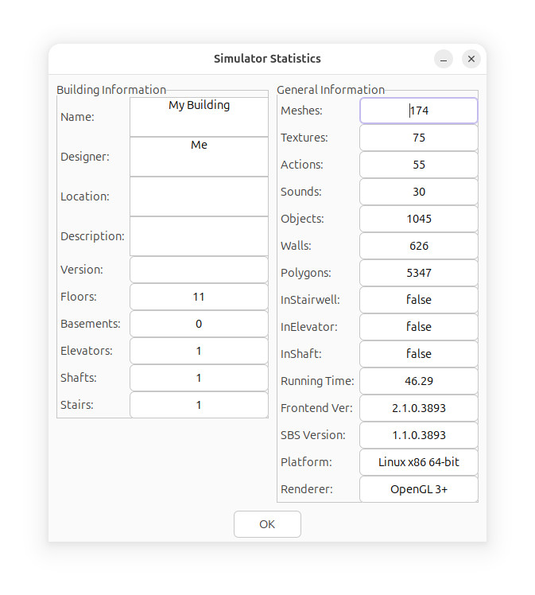

Simulator Statistics
The Simulator Statistics window shows important information about
the current building, and details of the simulator itself.

Skyscraper, by design, has no limits imposed on floor counts,
object counts, elevator counts, etc. It was intended to
leave these things up to the building developer.